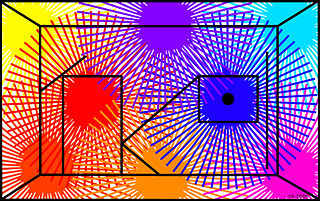
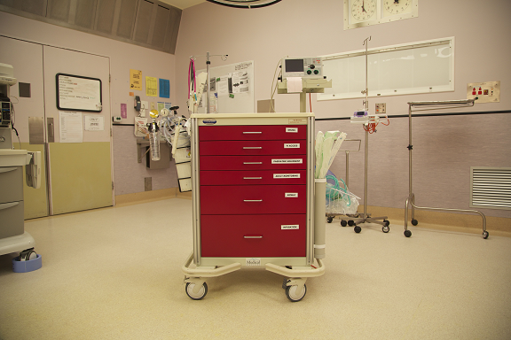

Current Projects
If you are interested in being involved in any of these projects, please contact us.
If you are interested in being involved in any of these projects, please contact us.
The aim of this project is to evaluate the performance of players in computer games that provide sound in the interface. Some questions to be looked at include: How is sound currently used in computer games? Does sound actually improve player performance? Can sound displays be better designed to increase (or decrease) the players ability to overcome game challenges?
Image source: Wikimedia Commons
Providing players with "information" is often a critical consideration in the design of computer games. We may wish to increase or decrease the amount of information depending on the game situation and the player's performance. This research investigates how we can manipulate the amount of information being displayed using multiple senses (visual, sound, touch). This is a broad topic area and investigates issues surrounding perception and cognition in the context of computer games. This work is in collaboration with members of the Newcastle Cognition Laboratory.
This project investigates the use of the Kinect as a cost effective physiotherapy tool for measuring posture and movement. This work is in collaboration with Suzanne Snodgrass and the Research Centre in Physical Activity and Nutrition.

Image source: Wikimedia Commons
One requirement that is often overlooked in the design of interfaces is the influence of culture. This project investigates culturally acceptable design practices as well as the most appropriate design features for capturing the cultural identity of an Indigenous group.
Image source: Wikimedia Commons
This project aims to produce an interactive, multi-media tool for training and assessment in the use of an emergency trolley. This standardised item of surgical equipment for advanced life support (ALS) is present in every hospital's operating suite, and holds up to 100 items of equipment. This pilot project, in conjunction with John Hunter Hospital (JHH) Perioperative Education team, will lead to development of a generic framework for research into clinical education.
| Previous |
| Next |